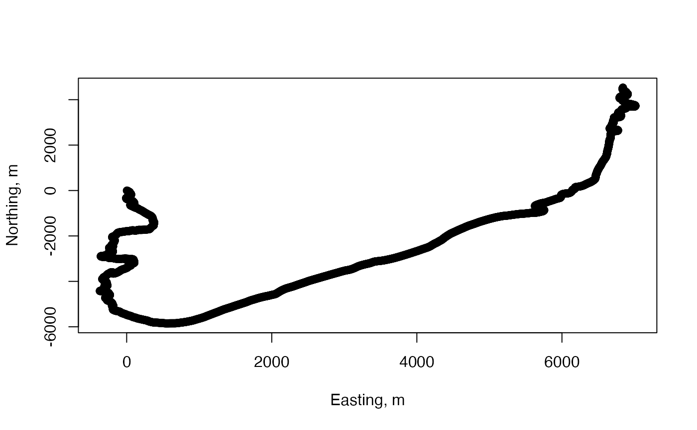

This function is used to estimate the simple horizontal dead-reckoned track (pseudo-track) based on speed and heading. This differs from ptrack in that the animals body angle is not considered. This makes it appropriate for animals that do not always move in the direction of their longitudinal axis.
Arguments
- A
The nx3 acceleration matrix with columns [ax ay az] or acceleration sensor list. Acceleration can be in any consistent unit, e.g., g or m/s^2.
- M
The magnetometer signal matrix, M = [mx,my,mz] in any consistent unit (e.g., in uT or Gauss) or magnetometer sensor list. A and M must have the same size (and so are both measured at the same sampling rate).
- s
The forward speed of the animal in m/s. s can be a single number meaning that the animal is assumed to travel at a constant speed. s can also be a vector with the same number of rows as M, e.g., generated by
ocdr.- sampling_rate
The sampling rate of the sensor data in Hz (samples per second).
- fc
(optional) Specifies the cut-off frequency of a low-pass filter to apply to A and M before computing heading. The filter cut-off frequency is in Hz. The filter length is 4*sampling_rate/fc. Filtering adds no group delay. If fc is empty or not given, the default value of 0.2 Hz (i.e., a 5 second time constant) is used.
Value
Data frame track containing the estimated track in a local level frame. The track is defined as meters of northward and eastward movement (termed 'northing' and 'easting', i.e, columns of track are northing and easting relative to the animal's position at the start of the measurements (which is defined as [0,0]). The track sampling rate is the same as for the input data and so each row of track defines the track coordinates at times 0,1/sampling_rate,2/sampling_rate,... relative to the start time of the measurements.
Note
Frame: This function assumes a [north,east,up] navigation frame and a [forward,right,up] local frame. Both A and M must be rotated if needed to match the animal's cardinal axes otherwise the track will not be meaningful. Unless the local declination angle is also corrected with rotframe, the dead-reckoned track will use magnetic north rather than true north.
CAUTION: dead-reckoned tracks are usually very inaccurate. They are useful to get an idea of HOW animals move rather than WHERE they go. Few animals probably travel in exactly the direction of their longitudinal axis. Additionally, measuring the precise orientation of the longitudinal axis of a non-rigid animal is fraught with error. Moreover, if there is net flow in the medium, the animal will be advected by the flow in addition to its autonomous movement. For swimming animals this can lead to substantial errors. The forward speed is assumed to be with respect to the medium so the track derived here is NOT the 'track-made-good', i.e., the geographic movement of the animal. It estimates the movement of the animal with respect to the medium. There are numerous other sources of error so use at your own risk!
Examples
bwhtrack <- htrack(A = beaked_whale$A, M = beaked_whale$M, s = 4)
plot(bwhtrack$easting, bwhtrack$northing, xlab = "Easting, m", ylab = "Northing, m")
